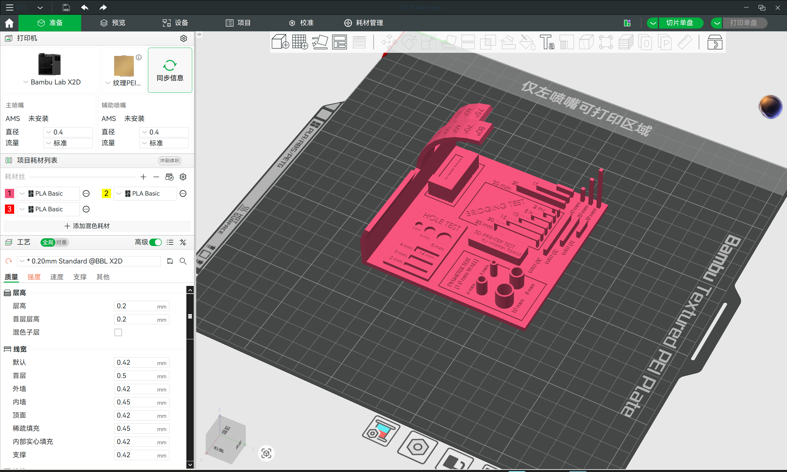
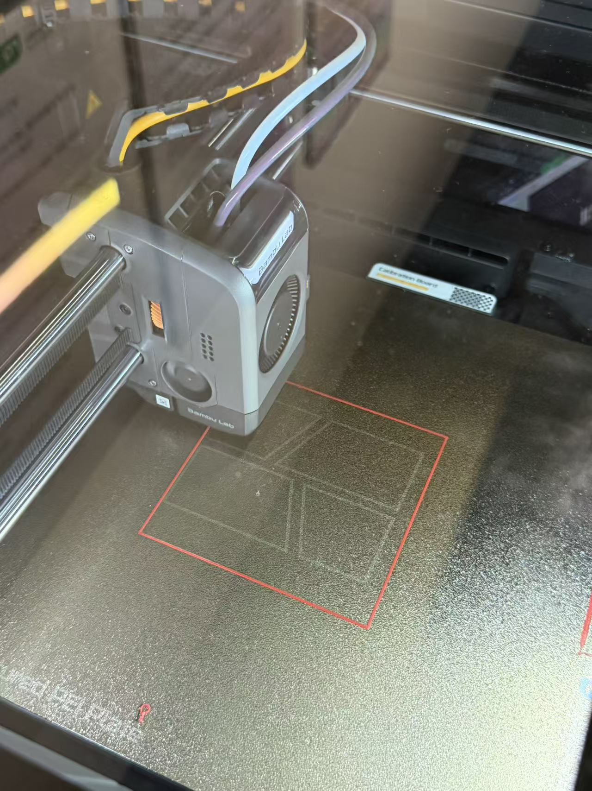
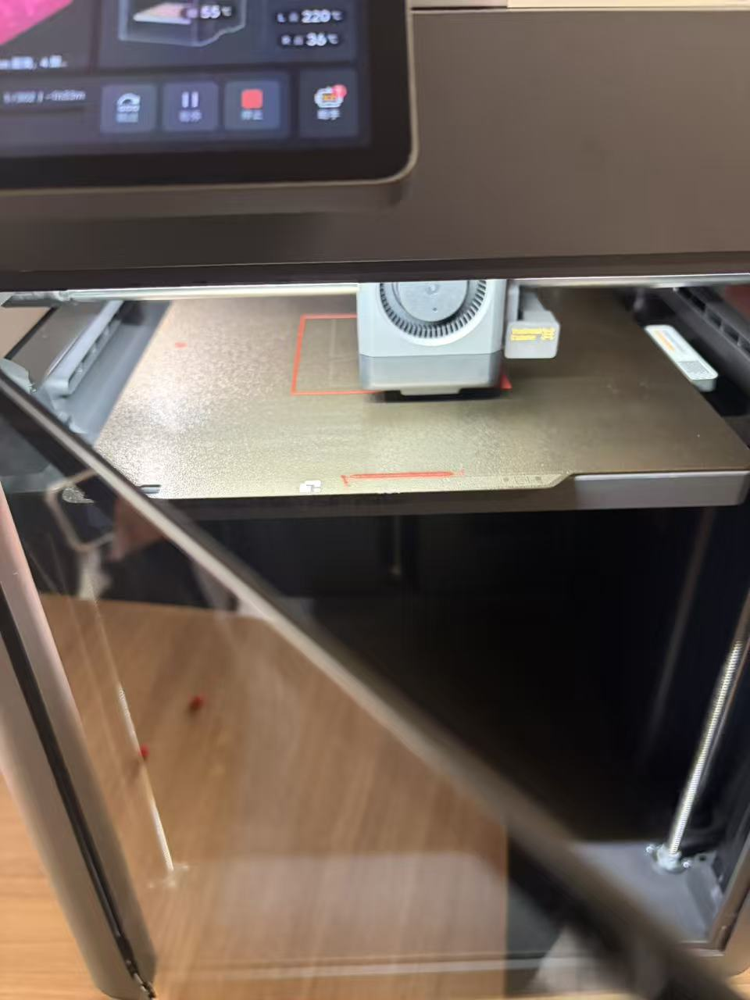
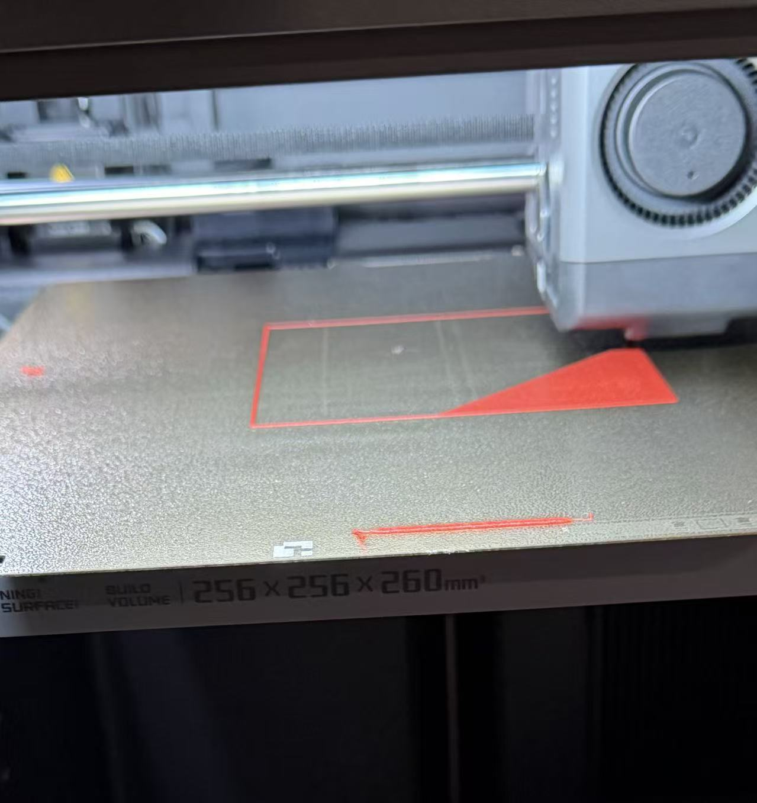
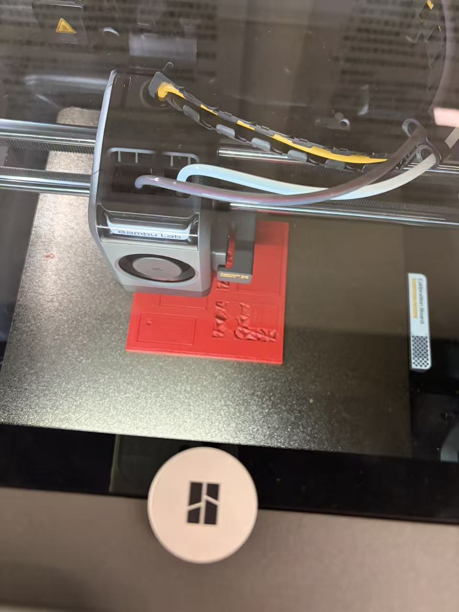
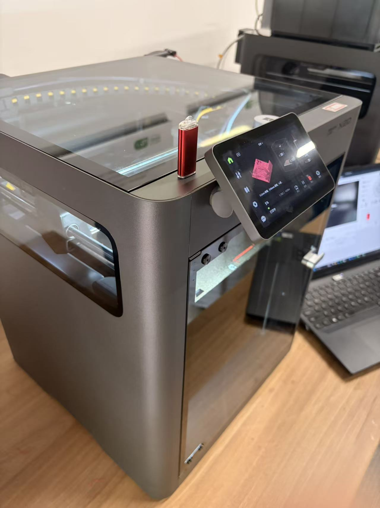

3D 打印练习
✅ 作业清单
- 完成打印前的建模与尺寸确认
- 确定打印参数与支撑方案
- 记录 D1-D5 的打印过程变化
- 整理最终成品与问题总结
🎯 3D 打印练习成果
本次练习围绕 3D 打印的完整流程展开：先完成 D0 阶段的建模与准备，再依次记录 D1 到 D5 的打印过程，最终形成一套清晰可展示的打印实践记录。
🛠️ 项目介绍
本周主要完成 3D 打印实践，重点是从建模准备开始，逐步走完整个打印流程，包括模型切片、打印参数设置、成型过程观察以及最终成品整理。
🧩 练习重点
D0：打印前建模与结构确认；D1-D5：打印过程中的层层推进，包括初始成型、细节稳定、支撑与表面优化等。
阶段 D0：打印前建模
在打印开始前，先完成模型的基本建模与结构检查。这里的重点是确认尺寸、厚度、连接方式和打印可行性，避免后续打印中出现结构失衡或粘连问题。
- 确认模型比例与可打印性
- 检查支撑和底部接触面是否合理
- 为后续打印过程提供稳定的基础

D0 建模准备
阶段 D1：打印启动
打印开始后，首先观察喷头起始位置、底层附着与首层流量是否稳定。这一阶段决定后续打印是否能顺利推进。
- 检查首层是否均匀贴合
- 观察打印起始是否稳定
- 及时纠正初始偏移问题

D1 初始打印状态
阶段 D2：打印推进
随着打印进度推进，模型的外形逐渐清晰。此时需要关注层与层之间的连续性，以及材料是否出现轻微错位或翘边。
- 观察模型外轮廓是否稳定
- 确认层高和填充是否均匀
- 避免结构中途出现明显偏差

D2 中段成型
阶段 D3：细节成型
进入细节成型阶段后，模型轮廓和局部形态开始更清楚地呈现。这个阶段重点是保持稳定的挤出与细微结构的完整性。
- 关注小尺寸细节是否完整
- 避免局部过度挤出导致毛刺
- 确保打印速度在可控范围内

D3 细节成型
阶段 D4：接近完成
当模型接近完成时，表面轮廓已经基本稳定。此时需要检查是否有轻微翘边、支撑残留或表面层次不均等问题。
- 确认表面是否平整
- 检查支撑与悬空结构是否可移除
- 为最终成品整理做准备

D4 接近成品
阶段 D5：最终成品
最后一阶段是打印完成后的整体整理与成品展示。通过观察最终效果，可以总结本次练习中的成功点和可优化项。
- 整理最终打印成果
- 记录整体效果与细节问题
- 形成完整的 3D 打印实践总结

D5 最终成品
阶段 D6：成品细节补充
在最终成品阶段，补充展示打印完成后的局部细节与整体效果，方便更完整地观察作品的表现力和结构状态。

D6 成品细节补充
阶段 D7：成品侧视展示
通过侧视角度呈现作品的外形和层次关系，帮助观察模型在不同角度下的完整效果。

D7 成品侧视展示
阶段 D8：最终成果汇总
最后汇总整体成品图，作为本次 3D 打印练习的终版展示，突出完整作品的最终呈现效果。

D8 最终成果汇总
🔨 制作过程记录
这部分用于记录从 D0 建模准备到 D5 最终成品的完整打印流程，方便后续整理和展示。
📌 第一步：D0 建模准备
先确认模型结构、尺寸和打印可行性，避免后续过程中出现偏移、支撑不合理或底层附着不稳的情况。
📌 第二步：D1-D2 打印起始与推进
记录首层稳定性和结构推进过程，观察打印是否平稳，并及时处理初期出现的偏差。
📌 第三步：D3-D4 细节与表面调整
进入细节成型后，重点关注局部表面、支撑效果和打印顺滑度，保证最终成品更加完整。
📌 第四步：D5 最终成品总结
最后整理成品效果并记录本次打印实践中值得保留的经验与可改进的地方。